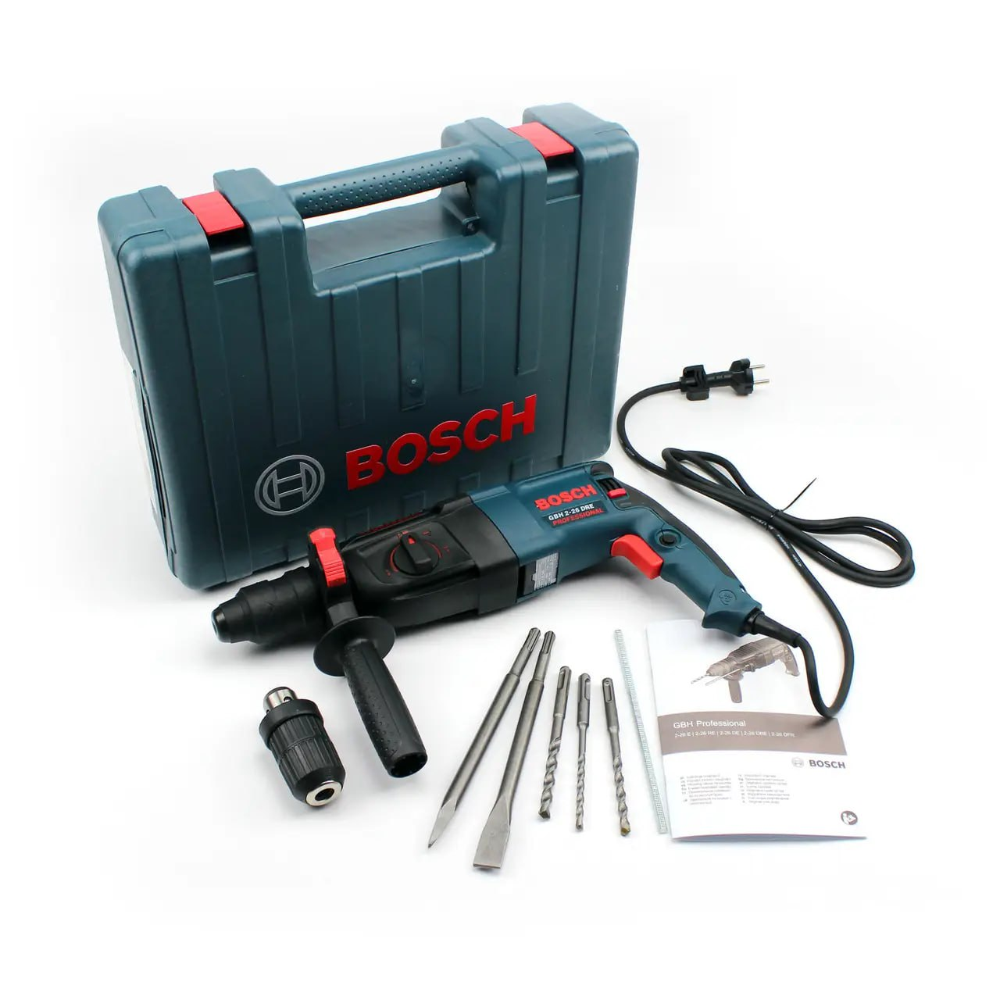
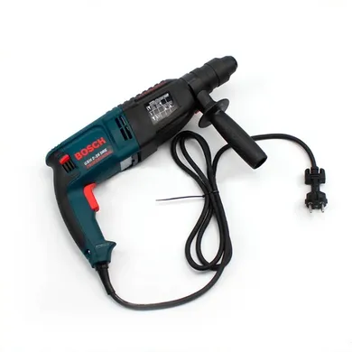

Yurost
Вхід|Реєстрація
Каталог
Yurost
>


Перфоратор Bosch GBH 2-26 DRE (800 ВТ, 2.7 ДЖ),
професійний перфоратор бош
1800 ₴
Купити
(Остап)
Купити
(Юрій)
Характеристика:
Потужність: - 800 Вт
Число оборотів: - 0-900 об/хв
Кількість ударів за хвилину: - 4000 уд/хв.
Сила удару: 2.7 Дж
Максимальний діаметр свердління бетону: 26 мм
Тип живлення: - мережевий
Тип патрона: - SDS-Plus
Змінний патрон: - так
Режими роботи: - свердління, свердління з ударом, удар
Вага: - 2,7 кг
Перфоратори Bosch – це надійність та висока якість!